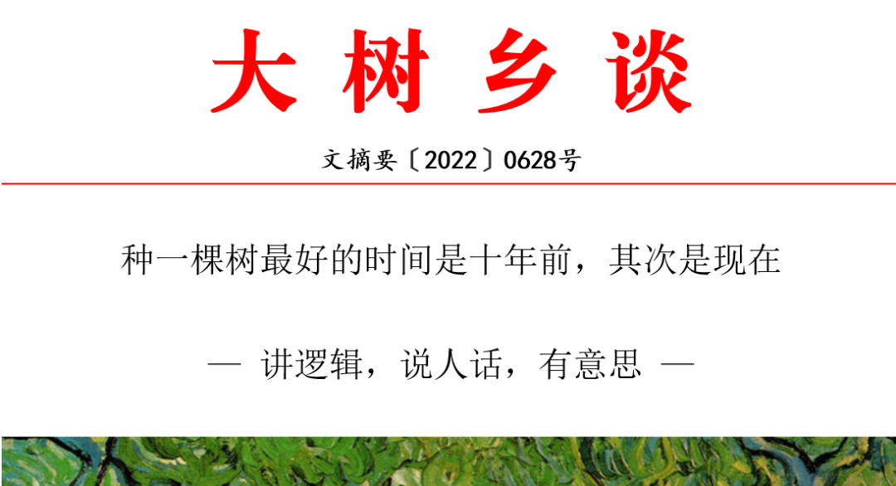

全球凛冬将至，我们个人该如何做好应对？

去年11月，小镇分享了对今年国内国外形势的一些看法，对美国滞涨、日本泡沫危机、欧洲能源危机以及全球粮食危机做了大概的推演，也对国内改革动作进行了分享，今年在《破局未来：2022年的中国经济与政策调控》做了进一步论述。
目前看大部分符合预期了，有的出现了一定偏差，比如二季度的GDP增速，目前看上半年累计增速应该在2%左右，下半年压力比较大，但整体不变。从全球看危机更加严峻，但危机之下也孕育着大量的机遇，全球各国都在谋求破局，2022年注定是新时代的起点，国家如此，个人也如此。
席卷全球的大变局必将深刻改变旧有的框架，从全球、国家一路席卷到各个行业、企业、个人，也必将改变很多旧有的思维和生活方式，我们个人当然要做好准备，这个准备不仅仅是物质的， 更重要的是个人应该怎么做，才能在纷乱的变局时代，找到更确定性的发展路径。
本篇将着眼于个体，分享重点侧重于个人谋发展、避风险的一些行之有效方法论。这些经验经过小镇和多位不同行业朋友的验证，是可行的。
本篇也是《人生前35年的个人发展方法论》这篇总论之后的第一篇子章，时隔一年，建议将两篇结合在一起阅读。
本篇尤其适合大学毕业后至35岁的朋友们，对于仍在大学就读或者超过35岁的朋友也有很大帮助，查漏补缺、尽可能补一点就足以超越多数同龄人，退一步也可以影响孩子们。
接下来将分享4个部分，同样设置1个赠送名额：1、影响个人发展的思维误区2、工作前10年的职业阶段和突破路径3、挖掘提升自己的时间，打造第二人生增长曲线4、告别内耗，让自己更加强大的方法
一、影响个人发展的思维误区